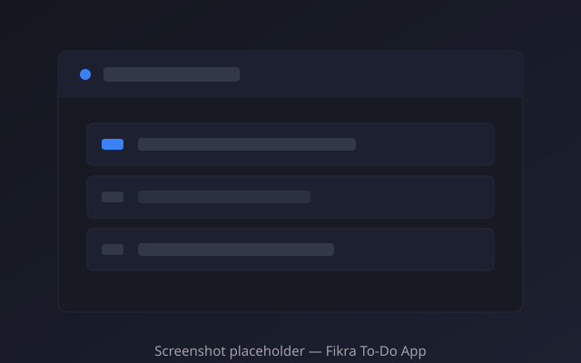
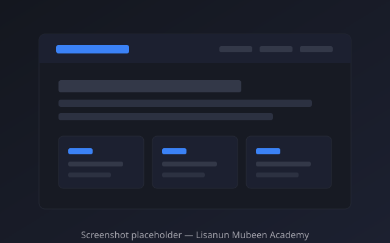
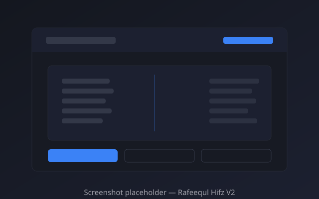

Frontend
Used daily in my projects.
Hello, I’m
Yunus Abdulhameed Zakari
I build responsive, user-friendly websites with clean design and practical functionality.
Open to suitable opportunities and freelance projects.

About
I’m a frontend developer based in Kaduna, Nigeria. I build websites that are responsive, accessible and easy to use, with clean HTML, CSS and vanilla JavaScript.
Most of my learning happens through shipping real projects: a bilingual daily to-do app, an educational platform with a PHP and MySQL backend, and a Quran memorization logbook. Each one taught me how to structure code, work with data, and keep an interface clear on small screens.
I’m currently developing toward full-stack engineering, adding Node.js, PHP, SQL and React to the frontend work I already do. I enjoy solving problems inside existing codebases as much as starting from scratch, and I care about details: readable markup, honest content, and interfaces that hold up on a phone.
I’m open to suitable opportunities, freelance work and collaboration.
Skills
Grouped honestly: the tools I build with today, and the technologies I’m actively adding.
Used daily in my projects.
Everyday workflow.
In progress, not expert-level yet.
Featured projects

01
A daily to-do app with Arabic and English support. Completed tasks stay persisted between visits, and the list resets automatically at midnight so each day starts fresh. Built as a progressive web app with a service worker and web app manifest.

02
An educational platform built with PHP and MySQL. The codebase covers student registration, an admin area, exam results and certificates, and documents Quran memorization features that are still in development. Deployed on shared hosting; parts of the platform are actively being worked on.

03
A Quran memorization daily logbook: a PHP 8 and MySQL backend with a right-to-left web interface and a mobile PWA wrapper. Includes recitation page cards with swipe navigation and flashcard practice, documented with local setup steps in the repository.
Experience & contributions
I design, build and maintain the three featured projects on this page end to end — frontend, and in two cases the PHP/MySQL backend as well. All of the code is public, so the work can be inspected directly rather than taken on trust.
I publish my work publicly and keep it readable: documented setup steps, organized folders, and honest notes about what is finished and what is still in progress.
Open-source contributions, freelance work or community involvement beyond my own repositories: [add your details here]
Services
Multi-page sites and interfaces that work cleanly from small phones to wide desktops.
Focused, fast landing pages built around one clear goal and one clear call to action.
Fixing layout breakage, interaction bugs and rough edges in an existing site.
Turning a design reference or mockup into clean, semantic HTML, CSS and JavaScript.
Small content updates, dependency-free fixes and general upkeep for static sites.
Have something in mind? Tell me about the project.
Start a conversationContact
The fastest way to reach me is email or WhatsApp. I read everything and reply as soon as I can.
For project enquiries and job opportunities.
For a quick conversation.
GitHub
yunus-dev-codecrafter (opens in a new tab)Source code for everything on this page.